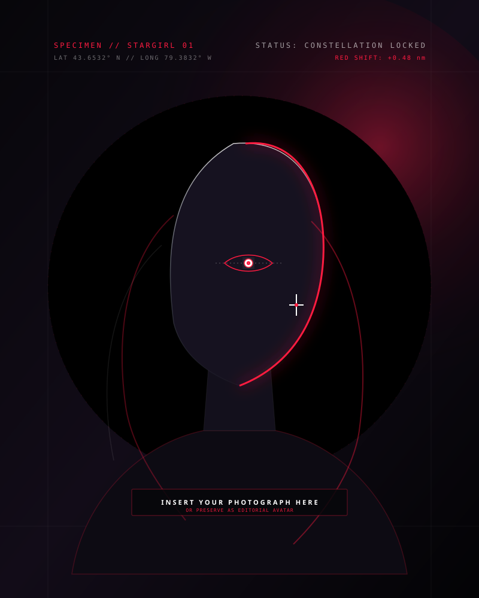

ABOUT
ME
More than one passion. More than one story. Just me, in every form I choose to be.
SO, WHO AM I?

I'm someone who has never wanted to be defined by just one thing. I love exploring, creating, learning, and discovering new sides of myself.
From coding something from scratch to expressing myself through dance, from stepping onto a basketball court to finding quiet moments through journaling, I find different ways to make sense of the world around me.
I'm curious by nature, creative at heart, and always becoming a little more of the person I want to be.
This is a little corner of the internet where all those different versions of me come together.
THE ARCHITECTURE OF BECOMING
LOGIC & CODE
Building interactive worlds from nothing but syntax and intent. Where mathematical precision meets dark atmospheric aesthetics.
MOVEMENT & PULSE
From the rhythmic intensity of dance to the relentless endurance of swimming and the electric pressure of the basketball court.
ART & PROSE
Charcoal strokes on paper, late-night handwritten journal reflections, and speeches delivered with unwavering voice and clarity.
THE CONSTANT SEARCH
Refusing to fit neatly inside a single box. Finding courage in curiosity and turning every obsession into personal craftsmanship.
BUT THAT'S ONLY
THE SURFACE.
"Step into the galaxy where passion meets obsession, and every version of me has a home."